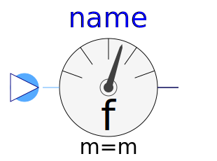
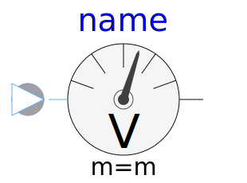
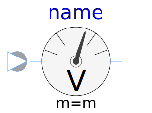
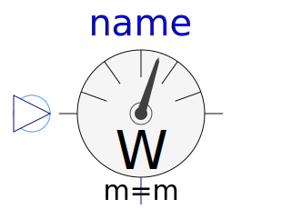

This package hosts sensors for quasi stationary multiphase circuits. Quasi stationary theory can be found in the references.
| Name | Description |
|---|---|
| ReferenceSensor | Sensor of reference angle gamma |
|  FrequencySensor | Frequency sensor |
|  PotentialSensor | Potential sensor |
|  VoltageSensor | Voltage sensor |
|
|
Continuous quasi voltage RMS sensor for multi phase system |
| CurrentSensor | Current Sensor |
|
|
Continuous quasi current RMS sensor for multi phase system |
|
|
Power sensor |
|
|
Multiphase sensor to measure current, voltage and power |
|  AronSensor | threephase Aron sensor for active power |
|
|
threephase sensor for reactive power |